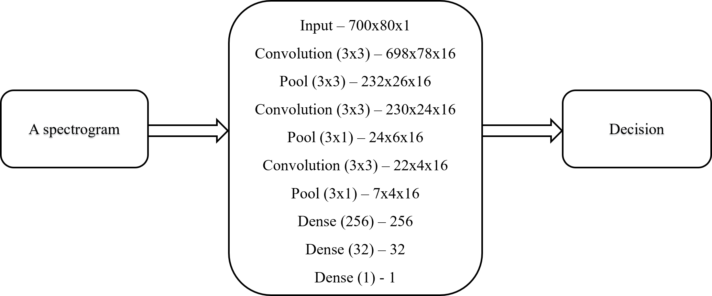

Detection of bird activities and identify the species with birds' songs is a challenging and meaningful task. For this semester's independent study project, I looked into efficient and effective ways to achieve the objective. For the bird activity detection task, I solved the binary classification task with data provided in DCASE 2018 using convolutional neural network in Tensorflow framework. For the second task, I trained convolutional neural network with spectrograms we extracted from bird songs under PyTorch framework. The main purpose of the BAD model is to reduce false alarm as much as possible. Besides, we did a voting for long segment of bird songs, to ensure the dominant species is identified. The BAD model achieved AUC score 0.9708 on the validation set, which outscore the winner of DCASE 2018. For the model of 30 common birds in Guangdong, we achieved 0.67 top 1 identification accuracy, and 0.82 top 1 accuracy after I introduce voting to the end-to-end classifier.
Keywords: bird activity detection, bird song, convolutional neural network
The independent research is supported by Duke Kunshan University, and instructed by Professor Ming Li, PhD. The report will be segmented into two parts. The first part is the bird activity detection system. The development data involves 7,690 excerpts from field recordings around the world, 8,000 smartphone audio recordings from around the UK and 20,000 bird clips collected from remote monitoring units placed near Ithaca. For the evaluation, a held-out set of 2,000 smartphone audio recordings from around the UK, 6,620 clips collected from unattended remote monitoring equipment in the Chernobyl Exclusion Zone including a wide range of birds, and 4,000 recordings from Hanna Pamula's PhD Project regarding remote monitoring night-flight calls. For the multiple classification part, all the data of bird songs are crawled from xeno-canto.org. Taking advantage of the open-source data, we segmented the data before applying it to training purpose. A training set of 120,000 bird song segments covering 30 bird species with mono-phone recordings are obtained. Each bird song segment is 5 second with sample rate 44.1 kHz. In the following sections, I will address the bird activity detection system and classification system, respectively.
Recently, bioaccoustic became increasingly focusing on animal communication signals and its analysis. A good bioaccoustic detection system is also saving huge amount of manual work on identifying and labeling tons of data. In recent years, speech processing and machine learning techniques are applied to this field. In the scenario for this project, we want to detect whether bird appears in the recordings before we apply the classification model.
Our system is based on a convolutional neural network structure adapted from the baseline architecture of DCASE 2017's challenge bulbul. We used preprocessed time-frequency features such as Mel-frequency spectrogram and other cepstral features as input to the CNN architecture. The results of our experiment are given as Area under the Curve (AUC) of the Receiver Operating Characteristic Curve (ROC) of the predicted probabilities.
As I have introduced in the general introduction, the development dataset and the evaluation dataset are independent datasets which has various sample rate, environmental noises, bird species number and so on. Each dataset has its unique characteristics, which gives a good generalization of the non-avian interfering sound sources. This is crucial to our project, since the environment we plan to apply this model is complicated and often will interact with human sounds. We can therefore effectively filter the interference that might be brought by human sound and reduce the false alarm.
Adapted from the DCASE 2017 bulbul challenge baseline, we build a feed forward 2D Convolutional Neural Network. The Network is composed of four CNN layers and three dense layers, as shown in the following graph.
Figure 1: Pipeline of Bulbul Baseline
This architecture was trained using log Mel filter bank energy features extracted from bird sound segments. The frame length is designed to be 46ms with a Hamming window function. The step size is 14ms, indicating the overlap of 70% among frames. Then Fast Fourier Transform is conducted, after that, the Mel filter banks with 80 bands are computed for each frame. The features will be normalized between 0 and 1 before fed into the network.
As for the training process and configuration, the details are as follow. The architecture adopted L2 regularization for CNN layers with regularization parameter 0.01. Also, Adam optimizer is adapted started with learning rate of 0.001, which will be reduced by a factor of 0.2 with the patience of 5 epochs. The loss function is binary cross entropy loss using accuracy as metric. The activation functions are leaky RELU in the CNN layers and sigmoid in the last dense layer[1]. The batch size of this training process is set to be 16, number of epochs is about 40 epochs.
After 36 epochs of iteration, the learning rate of optimizer Adam has reduced from 1e-3 to 4e-5. The AUC on the validation set has achieved 0.9708 with optimized cross entropy loss of 0.2305. This result is surprisingly good that it outperforms the winning team of DCASE 2018.
As is mentioned above, this system still has space for improvement. First, since this whole dataset is composed of 6 unique sub datasets, each sub one has a different composition of songs/noise. The current solution to this problem is by equalizing class weights to avoid mismatch in class representations. But better way to deal with this problem is trying to balance each dataset with the data augmentation approach. Second, since the dataset is composed of six difference datasets (two are collected under same condition), the recording environment, recording devices and sample rate varies. Thus, it would be helpful to adopt domain adaption to this system, which allows models that are performing well quickly applied on new datasets.
There has been reported that some birds in Guangdong Areas are nesting on the electric-power line, which increases the resistance and therefore increases the heat loss. To prevent this from happening, a local company is considering playing the bird’s natural enemy’s sound once detected bird activity around the power transmission line. This requires us to accurately identify the bird species given the bird sound. The BAD system is extremely useful here, since it filters out environmental noise and focuses completely on the bird activity detection, therefore the false alarm can be reduced significantly, saving energy and computational resources.
The source of all the data is from open-source website www.xeno-canto.org. As for the demo training plan, we chose 30 most common birds in Guangdong Area. The name list of these 30 birds will be mentioned in later part of this report. We scrapped recordings of these 30 birds from this website using a command line tool called xeno-canto.
Since the website is open source to recordist all over the world, the recordings vary in sample rate and recording quality. To unify the sample rate for later training, we applied the transformer from sox toolkit, which transforms untrainable form ".mp3" to trainable form ".wav" and unifies the sample rate to 44.1 kHz to guarantee the best quality of these training recordings.
The Mel Frequency Cepstral Coefficient and Log Filter bank Energies is extracted using the following configuration.
| Sample Rate | 44.1kHz |
|---|---|
| Window Length | 25ms |
| Window Shift | 10ms |
| Overlap | 0.6 |
| Low Freqency | 500Hz |
| High Frequency | 12kHz |
| nfilters | 256 |
| nfft | 1024 |
| pre-emph | 0.97 |
We will do Cepstral Mean normalization (CMN) after extracting these features.
As it has mentioned by Professor Ming Li in the last group meeting, nevertheless using voting is very effective, it seems quite dumb among various techniques. Attention mechanism is a good alternative for the voting system. In the future research, I will try to realize this function. Another possible improvement for the naive end-to-end classifier is that there could be a fusion of features to improve the training performance. Instead of getting the output from single feature, using fused feature will improve the performance.